モンマルトルと言えばサクレクール寺院ですが、この界隈には変わったおもしろいものがたくさん隠れています。寺院の周りはいつもたくさんの観光客と”スリ”が集まっているので、あまり好きな場所ではないのですが、ちょっと散策に。
メトロ2番線Blancheからスタートです。この駅の出口には有名なムーラン・ルージュがあり、もうすでにこの辺りから人で混雑していますね。
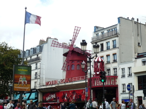
では、まず、ムーランルージュの右手にある通りを上がっていきます。 Rue Constanceという通りを入っていくとImp.M.Blancheという袋小路に突き当たります。
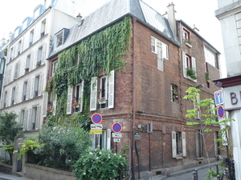
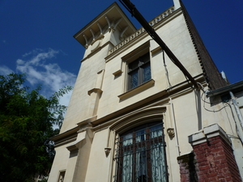
大通りから外れ、人通りも少なく静かな一角にちょっと古めかしい建物が建っています。ずっと突き当たるまで奥に入って行きます。
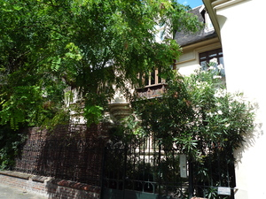
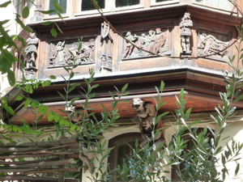
すると右手に木々で少し隠れた不思議な家が建っています（左写真)。よーく見ないと見えないのですが、怪しまれない程度に遠くから頑張って眺めてみました。
あるエキセントリックな貴族が１８３５年にこの土地に中世スタイル(style troubadour=中世をモデルにした理想的なスタイル）の家を建てましたが、彼が死んで20年後の1882年に破壊されます。骨董家の隣人が装飾品などを集め、自分の家に飾ったのが右上の写真。
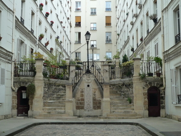
こちらもRue Durantinにあるちょっと隠れた場所。アパートの一角にあるため、門が開いていれば見ることができるかも。とても素敵な中庭です！ かなり豪華です。
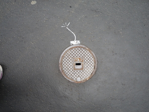
どこに何が隠れているか分からないパリの街。前も後ろも、そして足元にも！ 歩道で見つけたアートです。思わず笑ってしまった・・・。
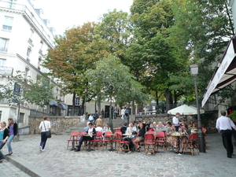
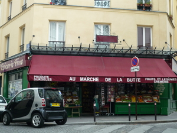
モンマルトル界隈は映画アメリの世界でもあります。どこかで見たような場所がたくさん潜んでいます。
{kind=link}
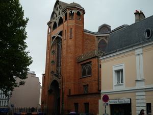
ちょっと大通りから路地Pass.des Abbessesへ入っていきます。するとSaint-Jean-l’EVANGELISTE教会がみつかります(Rue Y.Le Tac)。
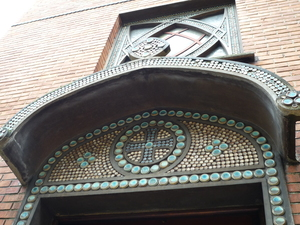
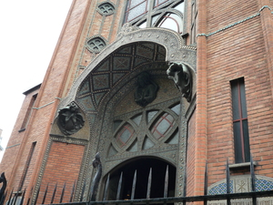
なかなか綺麗な教会です。教会の隣にあるカフェでちょっと一休み。急に雨が降り始めました。
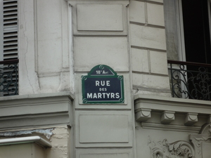
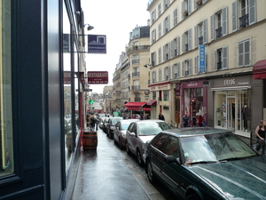
さあ、カフェで少しくつろいだので、また頑張って歩きましょう。
ここは、Rue des Martyrs=殉教者の通り
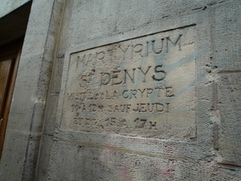
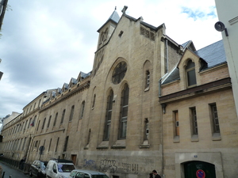
ローマ帝国時代に迫害されたクリスチャンたちの小さなカタコンベが存在していました。9世紀には、教会がその上に建設され、数世紀間多くの巡礼者たちの巡礼の地として機能してきました。しかし革命の際に地下にある鉱物を利用するため教会は破壊され、１８２４年に教会のあった位置を確認する調査が行われましたが突き止めることができず失敗に終わります。1887年に今ある教会が、もとの教会があったであろうと推測される位置に結局建てられることになりました。
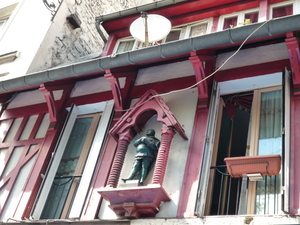
ここから大通りBoulevard de Rochechouart。お土産屋さんの二階に何やら奇妙なものが・・・。古いものであることは分かっているらしいのですが、でも何なのかは分からず・・・。不思議です。

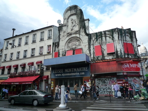
同じくBoulevard de Rochechouart。1807年にオープンしたキャバレーの一部。飲んだり、踊ったり、ビリアードをしたりして賑わっていたそうですが、今では破損がひどくなってきているようです。

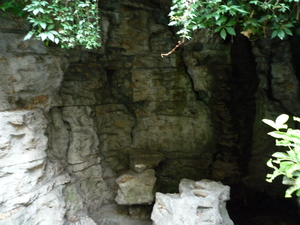
Rue Ronsard。サクレクール寺院へ向かう人は正面の階段から上がる人がほとんどですが、ちょっと回り道もいいですよ。靜かな通りで、猫もぐっすり眠っていました(左写真)。
そして少し歩くと小さな洞穴が。昔の採掘場跡です。ローマ時代にはもうすでに存在しており、gypse(石膏)が採れたそうです。セメントとして建設に使われたり、また美容のための化粧品にも利用されたそうです。また、当時はこの界隈の景色は今とは違い、穴だらけで(おそらく採掘のため)、かなり荒れていました。そのため犯罪やホームレスたちが多く住み着いていたそうです。
今もその名残りなのでしょうか。スリが多いのは・・・。今でも充分複雑な入り組んだ地形をしていますからね。今回の散策途中にも、小さな公園である男性が捕まっていましたよ。
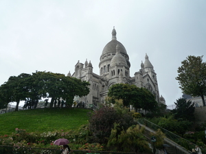
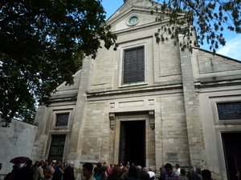
洞穴を過ぎ、さらに静かな通りを歩いていくと左手に階段が見えてきます。R.M.Utrilloという通りの名前がついていますが、実際は階段です。頑張って登ってみてください。そこをあがるとサクレクール寺院です。登りきった所には公衆トイレもあります！
サクレクール寺院の前を通り過ぎ、反対側に移動すると、先ほどとは対照的な風景が飛び込んできます。すごい観光客の数。
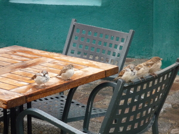
観光客の視線の先にはたくさんの絵描きさんたち。そして画家の集まるPlace du Tertreにはすずめたちも集まります。近寄っても逃げない！！！
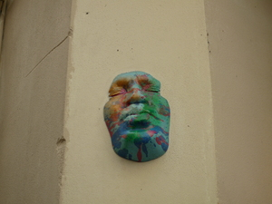
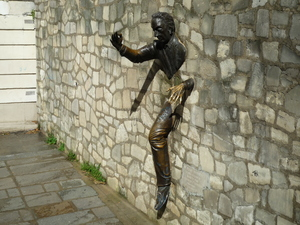
そして至る所にアートが隠れていますよ。左はPlace du Tertre近くにあるお店の壁に。右の写真はPlace .M.Aymeの壁に。本当に飛び出してきそうです。
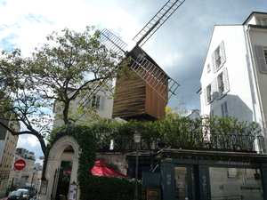
Rue Lepicにある風車Moulin Radet。近くの香水屋さんのため、この風車ではタマネギ、石膏、またその他の材料を挽いていたそうです。
他にももちろん昔はたくさん風車があったそうです。
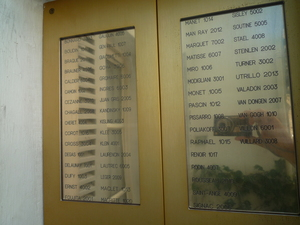
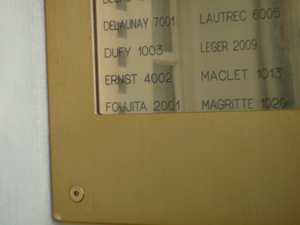
風車からすぐの所で、ちょっとおもしろいものを発見。あるアパートの住人の名前がすべて有名な画家の名前になっていました。こうすることでプライヴァシーを守っているのだとか。日本人画家のFOUJITAの名前もあります(ランスシャンパーニュ観光ページで少し紹介しています）。どんな人が住んでいるんでしょうね。
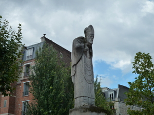
Statue de saint Denisサンドニの像は Impasse Girardonと呼ばれる公園の中にあります。
もともとモンマルトルとは、”Mont des Martyrs＝殉教者の丘”という名前の由来をもっており、紀元272年頃、のちにフランスの守護聖人となるSaint=Denis(サン・ドニ)と二人の司祭の3人が首をはねられ殉教したという伝説が残されています。首をはねられたサン・ドニは、自分の首を抱えながら北へ数キロ歩いたと言われ、息絶えた場所が現在のサン=ドニ大聖堂になったということです。
この公園を訪れるまでは、そんな伝説があるなんてまったく知りませんでした。静かな公園中央に自分の首を抱えた像を発見した時はとても不思議な感じがしましたが、歴史を知ることができて満足。
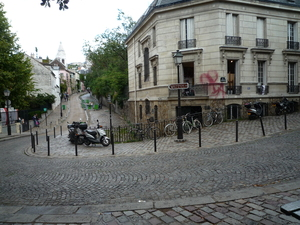
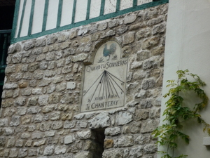
左はPlace Dalida。昔、この辺りは動物の水飲み場だったそうで、土地が少し盆状になっており名残りが確認できます。
右の写真はRue de l’Avreuvoirの壁に残っていた日時計。
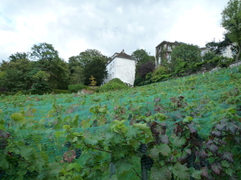
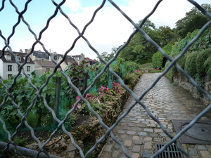
Rue des Saulesを下っていくと、そこには珍しいパリの葡萄畑が広がっています。
中世時代にはモンマルトル界隈一面にあった葡萄畑。しかし時間とともに小麦や果物畑に変わっていきました。当時のワインは評判も悪かったからでしょう。”Sauter comme une chevre=ヤギのように跳び上がる” と言われたモンマルトルワイン。
vin qui fait danser les chèvres : vin apre et acerbe ヤギを踊らせるワインとは苦く、渋く、酸っぱいワインを指します。
1リットル飲むと4リットル分排出しにトイレに駆け込まなければならなかったとまで言われています・・・。どんなワインだったのか・・・。
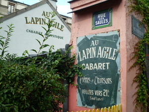
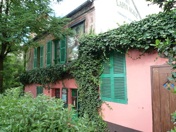
葡萄畑のすぐそば、Rue saint-Vincentにあるピンクとグリーンのかわいらしい建物。かわいらしいのですが、実は危険なビストロとして有名だったそうで、1960年には、”Au rendez-vous des voleurs”(泥棒の待ち合わせ場所）、 そして1869年には “le cabaret des assassins”(殺し屋のキャバレー）と呼ばれていました。建物の裏は墓地だったというから、また不気味・・・。1880年に、ようやくオーナーが諷刺画家Andre GIllに店のイメージキャラクターを作ってくれるように頼みます。そこで出来上がったのが、料理されようとしているうさぎが鍋から逃げ出すイメージ。
キャラクターのうさぎLapinと画家の名前Gillがつながり、さらに、うさぎのイメージと合うようGIllがAgile(すばしっこい)に変化し、名前がLapin Agile Cabaretと定着したそうです。
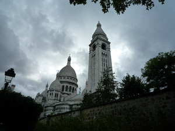
天気の悪い散策でしたが、かなりモンマルトルのイメージが変わった一日でした。サクレクール寺院とそこから広がるパリのパノラマ風景も素敵ですが、隠れた歴史を見つけて歩くのもとても楽しいです。皆さんもたくさん歩いてみてください。